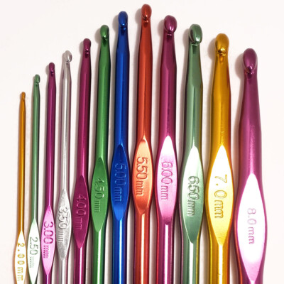
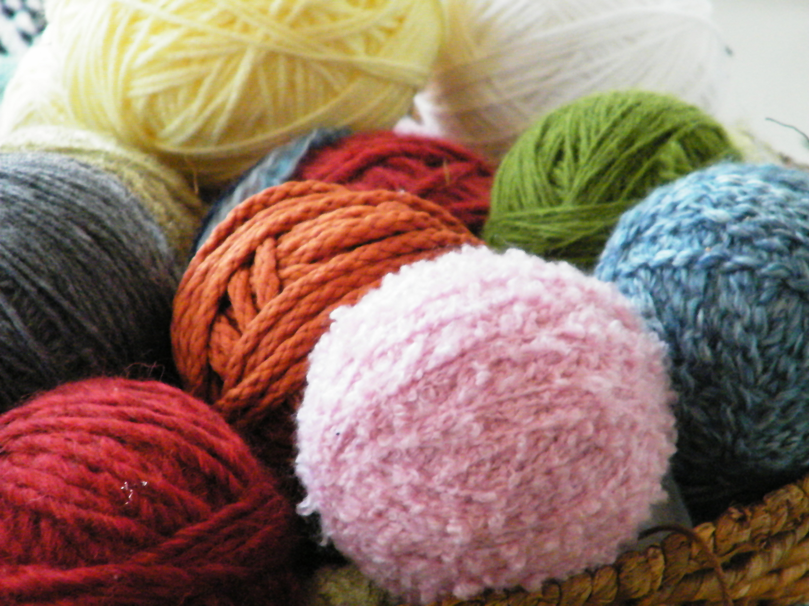
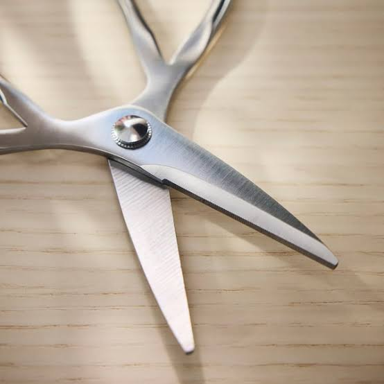
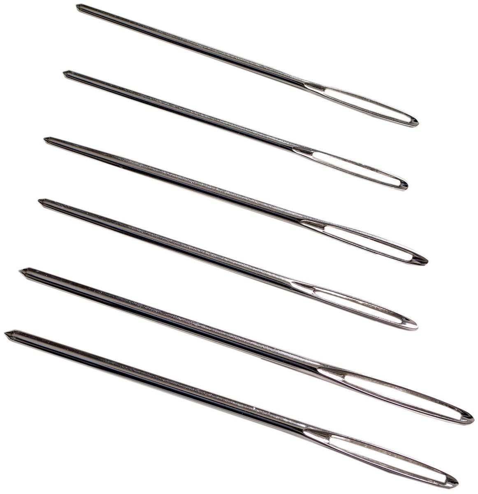
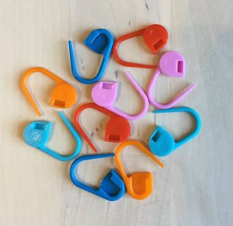

| Tool | Description |
|---|---|
 |
A crochet hook is a tool used to create loops in yarn and interlock them into crochet stitches. They come in various sizes and materials, such as aluminum, plastic, or bamboo. |
 |
Yarn is the primary material used in crochet. It comes in different weights, textures, and colors, allowing for a wide range of creative possibilities. |
 |
Scissors are essential for cutting yarn cleanly and efficiently. A small pair of sharp scissors is ideal for crochet projects. |
 |
A tapestry needle is a large needle with a blunt tip and a large eye, used for weaving in yarn ends and sewing pieces together. |
 |
Stitch markers are small tools used to mark specific stitches or rows in a crochet project, making it easier to follow patterns and keep track of progress. |